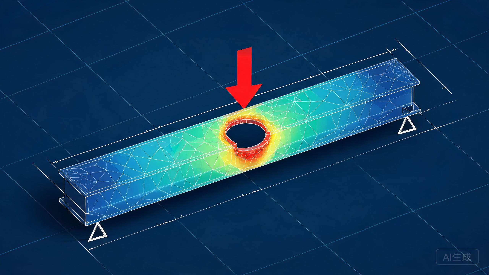

在浏览器内完成真实的有限元求解：Delaunay 网格离散 · CST 平面应力单元 · 稀疏矩阵共轭梯度求解，并以三维应力云图实时呈现孔边应力集中与梁的变形。
拖动下方参数，模型将自动重新划分网格并求解，3D 应力云图随之刷新。转动视角，观察孔边应力集中与梁的挠曲变形。
分析对象为一块带圆孔的矩形截面梁（等效平板梁），材料为 Q235 结构钢，处于线弹性范围内。载荷与支承方式可在上方模型中切换，默认工况为简支梁跨中集中加载。
| 类别 | 参数 | 取值 / 说明 |
|---|---|---|
| 几何 | 梁长 L × 梁高 H × 厚度 t | 1000 × 120 × 20 mm |
| 几何 | 圆孔直径 Φ / 轴向位置 x | 10 ~ 60 mm / 80 ~ 920 mm（可调） |
| 材料 | 弹性模量 E | 206 GPa |
| 材料 | 泊松比 ν | 0.30 |
| 材料 | 屈服强度 σy | 235 MPa（Q235） |
| 工况 A | 简支梁 · 跨中集中力 P | P = 2 ~ 20 kN（默认 5 kN，向下） |
| 工况 B | 悬臂梁 · 自由端集中力 P | P = 2 ~ 20 kN（向下） |
| 边界 | 简支约束 | 左下角铰支（ux=uy=0），右下角滚支（uy=0） |
| 边界 | 悬臂约束 | 左端面全固定（ux=uy=0） |
| 载荷施加 | 集中力处理 | 在加载点邻域节点上均分，避免单点奇异 |
| 本构 | 假设 | 平面应力 · 线弹性 · 小变形 |
整个求解链条完全在浏览器端完成：页面加载后即生成计算域网格（矩形域减去圆孔），组装整体刚度方程 K·u = F 并用共轭梯度法迭代求解，最后恢复单元应力并做节点平均。
flowchart LR A["几何建模
梁域 − 圆孔"] --> B["网格离散
Delaunay 三角化"] B --> C["孔边放射加密
过渡环 + 背景网格"] C --> D["CST 单元
6×6 刚度矩阵"] D --> E["整体组装
CSR 稀疏矩阵"] E --> F["约束处理 + 载荷等效"] F --> G["预条件共轭梯度
迭代求解"] G --> H["应力恢复
节点加权平均"] H --> I["后处理
von Mises 3D 云图"]
孔边是应力梯度最剧烈的区域。网格生成时在孔周布置由密到疏的放射状过渡环（内圈间距约为背景网格的 1/2），使孔边第一层单元尺寸远小于远场单元；外围采用带随机扰动的背景网格，避免结构性各向异性。切换"网格密度"并对比孔边峰值应力的变化，即可直观检验网格收敛性。
云图中最直观的现象是：应力"红斑"出现在孔缘的顶部与底部（沿梁高方向，约 ±90° 方位）。梁弯曲时应力沿截面高度线性分布，圆孔扰动这一梯度场，在孔缘上下侧形成应力集中——局部集中系数（孔缘峰值 ÷ 该处无孔远场弯曲应力）约为 1.7 ~ 2.6，与弹性力学对弯曲梯度场中圆孔的解析结果（约 2.0）一致[1][4]。
一个值得注意的现象：由于孔中心恰好位于中性轴附近（此处远场应力接近零），孔缘的绝对应力水平往往低于梁最外纤维的弯曲应力——对比指标卡中"孔缘峰值"与"梁整体最大应力"即可看到。因此基于净截面名义应力的 Kt 在小孔工况下可以小于 1（净截面名义基准取孔顶纤维，本身偏保守），并非计算错误。孔径越大，净截面削弱越严重（惯性矩按 (H−d)3 骤降），名义应力与孔缘峰值同步上升：把孔径从 Φ20 拉到 Φ60，孔缘峰值约翻倍，净截面名义应力增长近 3 倍；若将孔移向弯矩更大的跨中，孔缘峰值进一步抬升。
下缘应力包络与简支梁弯矩图 M(x) 成正比；孔位附近因净截面削弱出现局部应力抬升台阶（橙色带即为孔径范围）。
孔缘峰值或整体最大应力超过 235 MPa 即进入塑性（本模型仍按线弹性计算，此时结果仅作趋势参考）。调整载荷 P、孔径或孔位即可观察柱高变化。
FEA 得到的最大挠度略大于材料力学初等梁理论值（简支跨中加载 δ=PL3/48EI）。偏差主要来自两点：剪切变形（初等梁理论忽略，本模型 H/L 并不小）以及泊松效应引起的横向约束。两者偏差一般在几个百分点内，说明解合理可信。
简支梁的跨中、悬臂梁的固支端是弯矩峰值截面。将孔移到弯矩较小区域（在模型中左右拖动"孔位"即可验证），孔边峰值应力随 M(x) 近似线性下降，是最廉价的"补强"手段。
建议 d/H ≤ 0.2。净截面惯性矩按 (H−d)3 衰减，孔径翻倍时名义应力远不止翻倍；同时大孔还会加剧挠度与失稳风险。
对必须开孔的部位，采用套管、复板或翻边补强，工程上可降低孔边应力集中 30%~50%；补强件的连续性比局部加厚更有效。
孔缘应倒角并去除毛刺——应力集中处对表面缺陷极其敏感，粗糙孔壁可能使疲劳寿命成倍下降。交变载荷工况下建议对孔边做喷丸等表面强化处理。